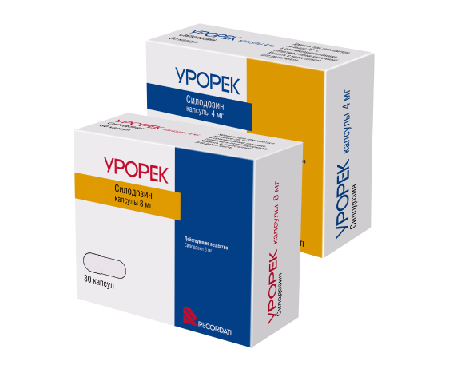

УРОРЕК – оригинальный10 альфа-адреноблокатор
Силодозин (действующее вещество препарата Урорек) обладает максимальной уроселективностью в своем классе, что обеспечивает его уродинамическую эффективность и высокую безопасность4
Ключевые преимущества препарата Урорек
- Единственный оригинальный препарат из группы альфа1-адреноблокаторов, не имеющий генериков в РФ1
- Клинические преимущества препарата Урорек (силодозин) определяются максимальной уроселективностью в классе альфа-адреноблокаторов4
- Урорек — альфа-адреноблокатор последнего поколения, который эффективен в отношении всех СНМП (накопления, опорожнения, постмиктурических).12,13 При этом Урорек обладает минимальным риском развития нежелательных явлений со стороны сердечно-сосудистой системы, в т.ч. у пациентов, принимающих антигипертензивные препараты46,8 СНМП симптомы нижних мочевыводящих путей
Максимальная уроселективность силодозина в классе альфа-адреноблокаторов обуславливает его уродинамическую эффективность и высокий профиль безопасности4
- Урорек значительно улучшает клинические проявления и качество жизни у всех пациентов с СНМП/ДГПЖ, в том числе с тяжелым течением11Узнать больше...
- Урорек является препаратом выбора для пациентов с СНМП/ДГПЖ и сопутствующими сердечно-сосудистыми заболеваниями3 Узнать больше...
Форма выпуска препарата Урорек
8мг - рекомендуемая доза для лечения симптомов ДГПЖ6*
*Более подробные сведения о препарате, особенностях применения, побочных действиях и др. — смотрите инструкцию по медицинскому применению лекарственного препарата Урорек, РУ ЛСР-005971/10 от 25.06.2010
Где купить
Способ применения*6
У пациентов с легкой почечной недостаточностью (клиренс креатинина ≥ 50 — ≤ 80 мл/мин) коррекция дозы не требуется. Для лечения пациентов с почечной недостаточностью средней степени тяжести (клиренс креатинина ≥ 30 — < 50 мл/мин) рекомендуется в течение первой недели принимать начальную дозу по 4 мг в сутки, при хорошей индивидуальной переносимости доза может быть увеличена до 8 мг в сутки. Применение препарата для пациентов с тяжелой почечной недостаточностью (клиренс креатинина < 30 мл / мин) не рекомендуется
*Более подробные сведения о препарате, особенностях применения, побочных действиях и др. — см. инструкцию по медицинскому применению лекарственного препарата Урорек, РУ ЛСР-005971/10 от 25.06.2010
Препарат Урорек (силодозин) включен в российские и международные клинические рекомендации и стандарты для лечения ряда урологических заболеваний:
Препарат Урорек (силодозин) зарегистрирован и применяется в разных странах мира Одобрен ЕМА*34 и FDA**35
EMA Европейское медицинское агентство
FDA Управление по санитарному надзору за качеством пищевых продуктов и медикаментов, США

Производство препарата Урорек, поставляемого в Россию, осуществляется в Италии с использованием субстанции из Японии, в соответствии с необходимыми требованиями к производству и контролю качества6,1
О проблеме
Доброкачественная гиперплазия предстательной железы (ДГПЖ), или как ее еще называют, аденома простаты, как правило, возникает у мужчин старше 50 лет и характеризуется наличием симптомов нижних мочевыводящих путей (СНМП), увеличением предстательной железы или ее части, и нарушением оттока мочи из мочевого пузыря вследствие инфравезикальной обструкции.38
Распространенность ДГПЖ увеличивается с возрастом. Так, клинически значимая ДГПЖ проявляется у 13% мужчин в возрасте старше 50 лет, у 34% мужчин в возрасте 60 лет и у 43% в возрасте 70 лет.39
Наличие СНМП может быть ассоциировано с тяжелыми хроническими заболеваниями, такими как заболевания сердца, сахарный диабет, артериальная гипертензия и депрессия40
Симптомы доброкачественной гиперплазии предстательной железы
Симптомы нарушенного мочеиспускания являются частой жалобой у взрослых мужчин. Они оказывают серьезное негативное влияние на качество жизни. При ДГПЖ предстательная железа увеличивается в размерах, оказывая давление на нижние мочевые пути. В результате развиваются следующие симптомы:41

Осложнения ДГПЖ38
Медикаментозное лечение СНМП/ДГПЖ
Антагонисты альфа1-адренорецепторов (альфа-адреноблокаторы) и ингибиторы 5 альфа1-редуктазы (ингибиторы 5АР) являются группами лекарственных препаратов, которые в настоящее время утверждены для лечения ДГПЖ. Обе группы препаратов обеспечивают надлежащее ослабление симптомов, но α—блокаторы обладают довольно быстрым началом действия, а ингибиторам 5АР требуется несколько месяцев для получения терапевтического эффекта42.
Часто задаваемые вопросы
Урорек — высокоселективный препарат, то есть преимущественно действует на альфа1А-адренорецепторы, которые находятся в нижних мочевых путях, предстательной железе и семенных пузырьках. Поэтому эффект развивается уже через 2–6 часов после приёма первой дозы препарата Урорек14 при минимальным количестве нежелательных явлений.5
Наиболее частый побочный эффект при приеме препарата Урорек — нарушение эякуляции46. Это может быть связано как с забросом эякулята при семяизвержении вместо уретры в мочевой пузырь, так и со снижением или отсутствием семенной жидкости во время эякуляции29. Силодозин снижает тонус гладкомышечных клеток семенных пузырьков, простаты и шейки мочевого пузыря, поэтому не происходит выброс семени. Этот эффект свойственен всем уроселективным альфа-адреноблокаторам53 и самостоятельно исчезает после прекращения приема препарата.6
Частота эякуляторной дисфункции прямо пропорционально связана с улучшением СНМ и скорости мочеиспускания и подтверждает эффективность альфа-адреноблокатора: чем выше эффективность, тем выше частота встречаемости эякуляторной дисфункции.29
Нарушение эякуляции не влияет на сексуальную функцию52, не воспринимается как беспокоящий симптом подавляющим большинством пациентов и не требует отмены терапии.46
Согласно инструкции по медицинскому применению, противопоказаний для применения лекарственного препарата Урорек у пациентов с СНМП/ДГПЖ и сопутствующими сердечно-сосудистыми заболеваниями нет.3 Урорек не оказывает влияния на частоту сердечных сокращений (ЧСС), систолическое артериальное давление (САД) и диастолическое артериальное давление (ДАД).9 Силодозин — не вызывает клинически значимого снижения артериального давления (АД)46, не усиливает действие антигипертензивных препаратов и не требует снижения дозы при одновременном приеме.7 В соответствии с дизайном клинического исследования многие пациенты получали сопутствующую терапию антигипертензивными препаратами (в основном, средствами, воздействующими на ренин-ангиотензиновую систему, бета-блокаторами, антагонистами кальция и диуретиками) без повышения частоты ортостатической гипотензии.6
При приеме препарата Урорек наиболее низкий риск развития сердечно-сосудистых осложнений.5
Повышенная селективность силодозина к альфа1A-адренорецепторам по сравнению с альфа1B-адренорецепторами выражается в пониженном риске развития сердечно-сосудистых осложнений.4 Благодаря этому частота ортостатической гипотензии на фоне его приема сравнима с таковой при приеме плацебо.45,9
В отличие от других альфа-адреноблокаторов (например, все формы тамсулозина47,48), Урорек не противопоказан к приему у пациентов с ортостатической гипотензией в анамнезе. Тем не менее, пациентам с ортостатической гипотензией в анамнезе не рекомендуется принимать любые альфа-адреноблокаторы, в т.ч. Урорек.6
Учитывая прогрессирующий характер течения доброкачественной гиперплазии предстательной железы, медикаментозную терапию следует проводить длительно (иногда в течение всей жизни пациента).49
Заложенность носа — это возможный побочный эффект для всех альфа-адреноблокаторов. При приеме препарата Урорек он может возникать примерно в 1% случаев.46
Согласно инструкции по медицинскому применению лекарственного препарата Урорек, доза 8 мг в сутки рекомендована для лечения пациентов с СНМП/ДГПЖ. Титрование дозы при применении силодозина не требуется.
Урорек 4 мг — это специальная доза для лечения пациентов с почечной недостаточностью средней степени тяжести (клиренс креатинина ≥ 30 до < 50 мл/мин). Рекомендуется в течение первой недели принимать начальную дозу по 4 мг в сутки, далее при хорошей переносимости доза может быть увеличена до 8 мг в сутки.6**Более подробные сведения о препарате, особенностях применения, побочных действиях и др. — см. инструкцию по медицинскому применению лекарственного препарата Урорек, РУ ЛСР-005971/10 от 25.06.2010Помимо субъективных симптомов, ДГПЖ вызывает прогрессирующее морфологическое ремоделирование мочевого пузыря с риском развития серьезных функциональных нарушений. Лечение должно не только купировать субъективные симптомы, но и включать профилактику патологического ремоделирования мочевого пузыря.161
Силодозин, действующее вещество препарата Урорек, в сравнении с другими альфа-адреноблокаторами более эффективно влияет на инфравезикальную обструкцию (ИВО), что оказывает влияние на предотвращение патологического прогрессирования ремоделирования мочевого пузыря и риск развития серьезных функциональных нарушений.50,51Урорек (силодозин) не включен в список жизненно важных лекарственных препаратов (ЖНВЛП)1 и не входит в перечень препаратов для льготного обеспечения граждан по федеральному льготному списку